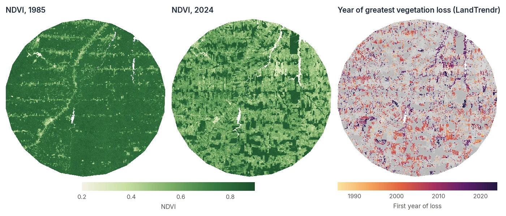
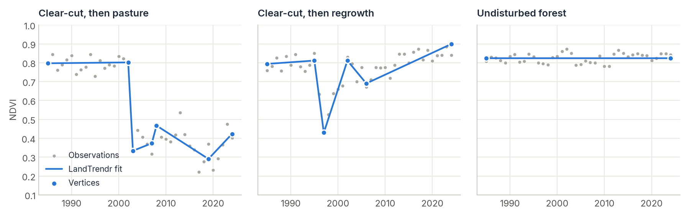

LandTrendr¶
Map when forests were cleared, burned or degraded, how severe each event was, and whether they recovered, from one satellite image per year.
(time, rows, cols)
How LandTrendr works¶
A yearly satellite series is noisy. Clouds, haze, sun angle and a dry year all make the values wobble. LandTrendr looks past that noise by approximating each pixel's history with a few straight line segments. The corners between segments are called vertices, and each segment has a clear meaning:
- a flat segment is a stable period;
- a steep drop is an abrupt disturbance (clear-cut, fire);
- a slow decline is degradation (drought, disease, selective logging);
- a rise is recovery or regrowth.

For each pixel the algorithm removes one-year spikes, proposes candidate vertices where the series bends most, and fits models with fewer and fewer segments. It keeps the simplest model that still fits the data well (judged by an F-test p-value). You control how many segments are allowed and how strict the test is.
Step by step¶
1. Prepare an annual index stack¶
LandTrendr needs one value per pixel per year, usually a cloud-free composite of the growing season. Good choices:
- NBR (Normalized Burn Ratio): the most sensitive to canopy loss and fire. The standard for forests.
- NDVI: easy to interpret, good for agriculture and savanna, less sensitive to structural forest change.
- Tasseled Cap Wetness: robust for forest structure.
Store it as a GeoTIFF with one band per year. Google Earth Engine (composite_type="annual") and STAC catalogs with build_annual_composites both produce this. So does LT-GEE: the stack used on this page is an NDVI composite collection exported from LT-GEE, so an existing LT-GEE workflow can move to local processing with Zeit unchanged.
import numpy as np
import zeit
ndvi = zeit.load_raster("LT_Stack_NDVI_Rondonia.tif", validate="landtrendr")
years = ndvi.time.dt.year.values # 1985 ... 2024, from the band names yr1985 ... yr2024
print(ndvi.dims, ndvi.shape) # ('time', 'y', 'x') (40, 1671, 1686)
load_raster returns a georeferenced cube with the year of each band in its time coordinate, so the steps below need neither the years nor the CRS again. validate="landtrendr" warns you if the stack looks wrong, for example too few years. A stack whose bands are not named by year is read with start_year=1985.
2. Segment every pixel¶
lt = zeit.landtrendr(
ndvi,
direction="loss", # we are looking for DROPS in NDVI (the default)
max_segments=6, # at most 6 segments, 7 vertices
)
Set direction to match your index
LandTrendr's rules are asymmetric: it treats sudden changes in one direction as disturbance and in the other as recovery. Use direction="loss" (the default) when disturbance makes your index fall (NDVI, NBR, EVI, wetness) and direction="gain" when it makes the index rise (SWIR bands, brightness). With the wrong orientation, about three quarters of the pixels in this tutorial's Rondônia data get different vertex years. Either way, the results stay in the original scale of your data: there is no need to flip the index, as LT-GEE does.
Years without an observation are left out of each pixel's fit: NaN, the raster's NoData value and, for integer stacks without one such as this Int16 NDVI, 0, which is how Earth Engine exports masked pixels (see nodata below).
The result lt is an xarray.Dataset on the same grid and CRS as ndvi. With max_segments=6 each pixel has up to 7 vertices:
vertex_year (vertex, y, x): the vertex years (0past the pixel's last vertex);vertex_value (vertex, y, x): the fitted values at those years (NaN past the last vertex);n_vertices (y, x): the number of vertices;rmse (y, x): how well each fit follows its data. It is used below to separate real events from noise.
3. Extract disturbance maps¶
extract_events reads the vertices and returns one event per pixel as a set of maps:
loss = zeit.extract_events(
lt, # event_type defaults to the direction LandTrendr ran with: "loss"
sort_by="greatest", # which event to keep if there are several
min_magnitude=2000, # ignore drops smaller than 0.2 NDVI (data is x10000)
min_duration=1,
)
list(loss.data_vars)
# ['yod', 'date', 'magnitude', 'duration', 'pre_val', 'post_val', 'rate', 'dsnr']
loss is an xarray.Dataset of (y, x) maps, georeferenced like ndvi:
| Map | Meaning |
|---|---|
yod |
Year of the vertex where the loss begins, i.e. the last year before the drop (0 = no event). The first year in which the loss is visible is yod + 1. |
date |
That first year with the loss, as a date (January 1 of yod + 1; NaT = no event). The same variable on events of CCDC and BFAST holds the exact date of the break. |
magnitude |
Size of the drop, in the units of your data. |
duration |
Years the drop took. 1 is abrupt, larger values are gradual. |
pre_val, post_val |
Fitted value before and after. |
rate |
magnitude / duration. |
dsnr |
Magnitude divided by the fit's RMSE: a signal-to-noise ratio. Values above 2–3 are rarely noise. |
sort_by chooses among several losses in the same pixel: "greatest" (largest magnitude), "newest", "fastest", "longest", or "dsnr". Regrowth comes from the same fit with event_type="gain".
4. Clean up and save¶
Keep confident events, then write GeoTIFFs. The maps carry their georeferencing, so save_raster needs nothing else:
# yod == years[0] means the loss segment starts at the first year. On noisy
# NDVI that is usually a slow decline over the whole record, not a dated event.
confident = (loss.yod > years[0]) & (loss.dsnr >= 3)
first_year = (loss.yod + 1).where(confident, 0).astype("uint16")
zeit.save_raster(first_year, "results/loss_year.tif", nodata=0)
zeit.save_raster(loss.magnitude.where(confident, 0), "results/loss_magnitude.tif", nodata=0)
To write every map as it is, one GeoTIFF each (yod.tif, magnitude.tif, …), pass the whole Dataset: zeit.save_raster(loss, "results/loss").
Isolated single pixels are usually noise. A minimum mapping unit filter removes patches smaller than a given size:
yod = zeit.apply_mmu_filter(loss.yod, mmu_pixels=11) # patches under 11 pixels become NoData
zeit.save_raster(yod, "results/loss_year_mmu.tif")
The map at the top of this page uses exactly these steps: no event starting in the first year, dsnr >= 3 and an 11-pixel minimum mapping unit.
5. Inspect individual pixels¶
Plotting a few pixels is the best way to check your parameters. zeit.landtrendr also takes a single pixel's series, and fitted=True adds the fitted trajectory (the series rebuilt from the vertices):
import matplotlib.pyplot as plt
row, col = 1471, 819 # the "clear-cut, then pasture" pixel shown above
pixel = ndvi[:, row, col] # one series, with its dates
fit = zeit.landtrendr(pixel, fitted=True)
n = int(fit.n_vertices)
plt.scatter(years, pixel, color="grey", label="Observed")
plt.plot(years, fit.fitted, label="LandTrendr fit")
plt.plot(fit.vertex_year[:n], fit.vertex_value[:n], "o", label="Vertices")
plt.legend()
plt.show()
A single pixel's result has the same variables, without the y/x dims:
fit.vertex_year.values
# array([1985, 2002, 2003, 2007, 2008, 2019, 2024], dtype=int16)
fit.vertex_value.values.round()
# array([7972., 8018., 3333., 3734., 4670., 2903., 4230.], dtype=float32)
Any series works the same way: a list or 1-D array with years= (zeit.landtrendr(values, years=years)), or a pandas.Series indexed by dates or years. The same vertices are also in the full result, lt.isel(y=row, x=col), and zeit.landtrendr(ndvi, fitted=True) adds the fitted trajectory of every pixel as fitted (time, y, x).
6. Fit other bands to the same vertices¶
A classic LandTrendr trick is to segment on one index (say NBR) and then describe the same periods with other bands. This is known as fitting to vertices (FTV), LT-GEE's ftv bands. With every band in one (time, band, y, x) cube (or a Dataset), name the index to segment and the bands to fit:
stack = zeit.load_raster("landsat_indices.tif") # bands nbr, ndvi, tcw, swir1 per year
lt = zeit.landtrendr(stack, band="nbr", ftv=["ndvi", "swir1"])
lt.ftv_swir1 # (time, y, x): SWIR1 fitted through the NBR vertices
lt.vertex_value_ndvi # (vertex, y, x): NDVI at each vertex year
Each band is fitted as the original LandTrendr does (ftv_v1): desawtoothed, then segment by segment through the vertex years, in its own scale. If the bands come from different sources, put them on one grid first with load_raster(..., like=).
Tuning the parameters¶
The defaults follow the original LandTrendr and work well for 25–40 years of Landsat data.
| Parameter | Default | Effect |
|---|---|---|
max_segments |
6 |
Maximum segments per pixel. Lower it for short series (about n_years / 5). Too high a value lets noise become "events". |
spike_threshold |
0.9 |
Dampens one-year spikes before fitting. 1.0 disables it. Lower values remove spikes more aggressively. |
recovery_threshold |
0.25 |
Rejects recoveries faster than 1/value years (0.25 = at least 4 years to recover fully). Stops a cloudy year from looking like disturbance and instant recovery. |
pval_threshold |
0.05 |
A model must be at least this significant. Lower values give simpler fits. |
best_model_proportion |
0.75 |
Prefers models with more vertices whose p-value is at most (2 - best_model_proportion) times the best one, so 0.75 means within 1.25×. |
min_observations_needed |
6 |
Pixels with fewer valid years are left unsegmented. |
nodata |
"auto" |
Value marking a missing year. "auto": the raster's NoData, or 0 for integer data without one. None: only NaN, which is always missing. |
Processing large areas¶
Rasters larger than memory. Pass the file with chunks="auto": nothing is read until the results are written, and then the raster is read, segmented and written block by block:
lt = zeit.landtrendr("LT_Stack_NDVI_Rondonia.tif", chunks="auto") # lazy
loss = zeit.extract_events(lt, min_magnitude=2000) # still lazy
zeit.save_raster(loss, "results/")
# results/yod.tif, magnitude.tif, duration.tif, ...
The same is available from the shell as zeit landtrendr.
Dask cubes and clusters. Lazy xarray cubes (for example from STAC or Zarr) go straight in, and stay lazy. Keep the time axis in one chunk:
annual = annual_ndvi.chunk({"time": -1, "y": 512, "x": 512}) # (time, y, x), one date per year
lt = zeit.landtrendr(annual, max_segments=6) # or annual.zeit.landtrendr(max_segments=6)
loss = zeit.extract_events(lt, min_magnitude=0.2)
zeit.save_raster(loss, "results/") # computed chunk by chunk while written
See Parallel & Cloud Processing to run this on a cluster.
Good practice¶
- Use a stable season. Composite the same months every year, so phenology is not mistaken for change.
- Mask clouds before compositing. Residual clouds create spikes.
spike_thresholdremoves most of them, but clean input always wins. - Validate with a sample, not by eye on the map. Draw a stratified sample of the map, label it with
zeit.interpretand estimate accuracy and area withzeit.accuracy(see Accuracy & Area). - Compare with the published method. Zeit reproduces the original IDL LandTrendr vertex for vertex, see Algorithm Fidelity.
References¶
- Kennedy, R. E., Yang, Z., & Cohen, W. B. (2010). Detecting trends in forest disturbance and recovery using yearly Landsat time series: 1. LandTrendr — Temporal segmentation algorithms. Remote Sensing of Environment, 114(12), 2897–2910. doi:10.1016/j.rse.2010.07.008
- Kennedy, R. E., et al. (2018). Implementation of the LandTrendr algorithm on Google Earth Engine. Remote Sensing, 10(5), 691. doi:10.3390/rs10050691
- LT-GEE code and guide: github.com/eMapR/LT-GEE